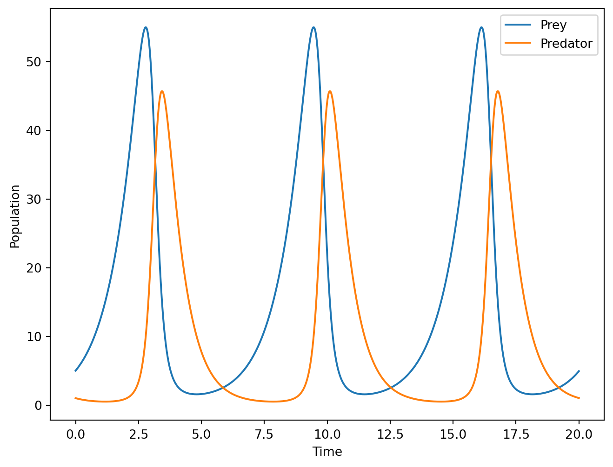
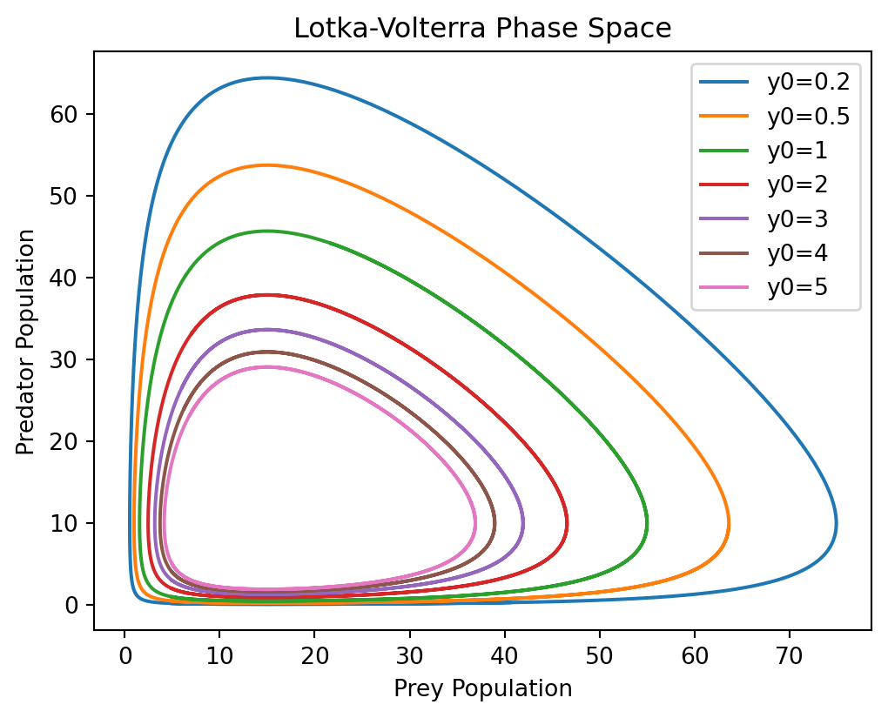

The Gauss-Newton method is a powerful optimization technique for solving non-linear least squares problems of the form \(\min_{p} \frac{1}{2}\|F(p)-d\|^2\). In this lecture, a derivation of the method is presented along with a comparison to Newton’s method. Finally an algorithm for solving the problem is given.
Author
Simon Ghyselincks
Published
September 25, 2024
$$
$$
A Non-Linear Dynamics Problem
A well studied problem in non-linear dynamics involves the predator-prey model that is described by the Lotka-Volterra equations. The equations are given by:
\[
\begin{aligned}
\frac{dx}{dt} &= \alpha x - \beta xy \\
\frac{dy}{dt} &= \delta xy - \gamma y
\end{aligned}
\]
where \(x\) and \(y\) are the populations of the prey and predator respectively. The parameters \(\alpha, \beta, \gamma, \delta\) are positive constants. The goal is to find the values of these parameters that best fit the data.
There is no closed form analytic solution that is known to this remarkably simple system of equations, which is why we must resort to numerical solutions to compute the model.
More information about the model can be found at the Wikipedia page.
The Forward Problem
We start with an initial time \(t_0\) and initial conditions \(x_0, y_0\), with parameters \(\alpha, \beta, \gamma, \delta\) to run a forward version of the problem using a variant of the forward Euler method, the RK4.
Show the code
import numpy as npimport matplotlib.pyplot as pltimport torchimport torch.nn as nnclass LotkaVolterraModel(nn.Module):def__init__(self, alpha, beta, gamma, delta):super(LotkaVolterraModel, self).__init__()# Define parameters as torch tensors that require gradientsself.alpha = nn.Parameter(torch.tensor(alpha, dtype=torch.float32))self.beta = nn.Parameter(torch.tensor(beta, dtype=torch.float32))self.gamma = nn.Parameter(torch.tensor(gamma, dtype=torch.float32))self.delta = nn.Parameter(torch.tensor(delta, dtype=torch.float32))def forward(self, x, y):# Ensure x and y are tensorsifnotisinstance(x, torch.Tensor): x = torch.tensor(x, dtype=torch.float32)ifnotisinstance(y, torch.Tensor): y = torch.tensor(y, dtype=torch.float32)# Compute dx and dy based on the current parameters dx =self.alpha * x -self.beta * x * y dy =self.delta * x * y -self.gamma * yreturn dx, dyclass RK4Solver:def__init__(self, model):self.model = modeldef step(self, x, y, dt):""" Perform a single RK4 step. """# Convert x and y to tensors if they are not alreadyifnotisinstance(x, torch.Tensor): x = torch.tensor(x, dtype=torch.float32)ifnotisinstance(y, torch.Tensor): y = torch.tensor(y, dtype=torch.float32)# RK4 Step calculations k1_x, k1_y =self.model.forward(x, y) k2_x, k2_y =self.model.forward(x +0.5* dt * k1_x, y +0.5* dt * k1_y) k3_x, k3_y =self.model.forward(x +0.5* dt * k2_x, y +0.5* dt * k2_y) k4_x, k4_y =self.model.forward(x + dt * k3_x, y + dt * k3_y)# Update x and y using weighted averages of the slopes x_new = x + (dt /6) * (k1_x +2* k2_x +2* k3_x + k4_x) y_new = y + (dt /6) * (k1_y +2* k2_y +2* k3_y + k4_y)return x_new, y_newdef solve(self, x0, y0, time_steps):""" Solve the system over a serie of time steps. Parameters: x0: Initial value of prey population y0: Initial value of predator population time_steps: List or numpy array of time steps to solve over """ x, y = x0, y0 DT = time_steps[1:] - time_steps[:-1] trajectory = torch.zeros(len(time_steps), 2) trajectory[0] = torch.tensor([x, y])for i, dt inenumerate(DT): x, y =self.step(x, y, dt) trajectory[i+1] = torch.tensor([x, y]) return trajectory# Define the model parametersalpha =1.0beta =.1gamma =1.5delta =0.1# Create the model and solvermodel = LotkaVolterraModel(alpha, beta, gamma, delta)solver = RK4Solver(model)# Define the initial conditions and time stepsx0 =5y0 =1time_steps = np.linspace(0, 20, 1000)# Solve the systemtrajectory = solver.solve(x0, y0, time_steps)x_values = trajectory[:, 0].detach().numpy()y_values = trajectory[:, 1].detach().numpy()plt.plot(time_steps, x_values, label='Prey')plt.plot(time_steps, y_values, label='Predator')plt.xlabel('Time')plt.ylabel('Population')plt.legend()plt.savefig('imgs/lotka_volterra.png')plt.show()

The time evolution of the prey and predator populations.
We can additionally look at the phase space of the system for various initial conditions to see how the different solutions are periodic.
Show the code
# Define the initial conditionsx0 =5y0 = [.2,.5,1, 2, 3, 4, 5]# Create the model and solvermodel = LotkaVolterraModel(alpha, beta, gamma, delta)solver = RK4Solver(model)# Define the time stepstime_steps = np.linspace(0, 10, 1000)# Plot the phase spaceplt.figure(figsize=(6, 4.5))for y in y0: trajectory = solver.solve(x0, y, time_steps) x_values = trajectory[:, 0].detach().numpy() y_values = trajectory[:, 1].detach().numpy() plt.plot(x_values, y_values, label=f'y0={y}')plt.xlabel('Prey Population')plt.ylabel('Predator Population')plt.legend()plt.title('Lotka-Volterra Phase Space')plt.savefig('imgs/lotka_volterra_phase_space.png')plt.show()

The phase space of the predator-prey model.
The Inverse Problem
The inverse problem in this case is to find the parameters \(\alpha, \beta, \gamma, \delta\) that best fit the data. We suppose that we have a model with parameters that takes in the initial conditions and time steps and returns the trajectory of the system. For simplicity we vectorize the previous \(\begin{bmatrix} x \\ y \end{bmatrix}\) into a single vector \(\vec{x}\). The forward model is then a function \(F(\vec{x}; \vec{p})\) where \(\vec{p}\) are the parameters and is an approximator of the true system, where
where \(\vec{x}\) is the state of the system and \(\vec{p}\) are the parameters.
The goal is to form an estimate of \(\vec{p}\), while the data that we have collected may be sparse, noisy, or incomplete. We represent the incompleteness in the data using the \(Q\)sampling operator which is applied to the true underlying data to give \(Qx\). If \(x\) is fully given then \(Q=I\).
A finite difference approximation of the derivative of the data can be used to approximate the derivative of the data,
So in this case the forward model is a time derivative, and the observed data is computed from an intial condition \(\vec{x}_0\) and an ODE approximate solution such as Euler’s method or RK4. The output of the forward process is then given as \(F\), where \[F(\vec{p}, x_0) = \hat {\vec{x}}(t, \vec{p}),\]
is the application of the system dynamics to the initial conditions and the parameter to create an estimated trajectory \(\hat{\vec{x}}(t, \vec{p})\).
The observed data is \(d = Q\vec{x}(t)\). We also make an assumption here that \(F\) does not depend on the particular solver that we are using for the forward ODE and that all of the \(\vec{p}\) are physical parameters, we assume that the parameters are faithful enough.
For the rest of the mathematical notation ahead, the explicit marking of vectors is ommitted to simplify the equations.
Goodness of Fit
The goodness of fit is measured by using the L2 norm of the difference between the observed data and the model output, thus forming the non-linear least squares problem:
To find the best fit, the objective is to minimize the mean squared error (MSE) of a function of the parameters \(p\) and the data \(d\). The data is fixed for a given problem, so it is only by varying \(p\) that an optimal solution can be found. The entire MSE function is denoted as \(G(p)\).
where \(G(\mathbf{p}) = QF(\mathbf{p}) - d\) and \(d \in \mathbb{R}^n\). We are minimizing the norm of a non-linear function of the parameters. Supposing that we want to find the minimizer, one approach would be by gradient descent.
The Jacobian: A quick review
The Jacobian is a multivariate extension of the derivative that extends to functions \(f : \mathbb{R}^m \to \mathbb{R}^n\). Because there are \(n\) function outputs and \(m\) input variables, the Jacobian is an \(n \times m\) matrix that contains the information of how each of the \(n\) functions changes with respect to each of the \(m\) variables. In an abuse of Leibniz’s notation, it can be seen as:
Note that like the derivative, the Jacobian is a function of the input variables \(\vec{x}\). The Jacobian is a linear approximation of the function \(f\) at a point \(x_0\) and can be used to approximate the function at a point \(x_0 + \Delta x\).
Noting that we are applying matrix multiplication using \(J_f\) evaluated at \(x_0\) and the vector \(\Delta x = \vec{x} - \vec{x_0}\). The quantity \(J_f(x_0) \Delta x\) is the directional derivative of the function \(f\) at \(x_0\) in the direction of \(\Delta x\).
The gradient of \(\|G(\mathbf{p})\|^2\) can be computed as follows:
From this stage, gradient descent can be applied to find the minimum of the function. However, the function \(G(p)\) is non-linear and so the gradient descent method may not converge quickly or the problem may have poor conditioning. The celebrated Newton’s Method addresses some of these issues, but requires computing the Hessian \(\nabla^2 \|G(p)\|^2\) of the function, which can be expensive.
To demonstrate, the true Hessian of the function is: \[
\nabla^2 \|G(p)\|^2 = 2 J_G(p)^T J_G(p) + 2 \sum_{i=1}^n G_i(p) \nabla^2 G_i(p)
\]
So we’d have to compute the Hessian \(\nabla^2 G_i(p)\) of each of the \(G_i(p)\) functions, of which there are \(n\), not good in practice. If we did have this Hessian, the steps with Newton’s method would be:
Rather than solve the problem directly with Newton’s method, it can be approximated by linearizing inside of the norm and solving the linearized version using the normal equations. We approximate the function
So this resembles a scaled gradient descent. In Newton’s method we have the Hessian, in Gauss-Newton we have the Jacobian of the function. As a comparison:
The direction of change between iterations in Newton’s method can be rewritten as \[d_k = \left(J_G(p_k)^T J(p_k) + \sum_{i=1}^n G_i(p_k) \nabla^2 G_i(p_k)\right)^{-1} J_G(p_k)^T G(p_k)\]
While the direction in the case of Gauss-Newton is \[d_k = \left(J_G(p_k)^T J_G(p_k)\right)^{-1} J_G(p_k)^T G(p_k)\]
The difference between the two is the omission of the computationally expensive \(\sum_{i=1}^n G_i(p) \nabla^2 G_i(p)\) terms. The Gauss-Newton method is approximating the second-order approach of Newton’s method by only considering the first-order terms inside of the norm.
Recall that \(G(p) = QF(p) - d\) which is the difference between the observed data and the model. If the difference is small then \(G_i\) is also small and the approximation is good.
Algorithm for Gauss-Newton
We have derived the algorithm for the Gauss-Newton method for solving the non-linear least squares problem. The algorithm is as follows:
\begin{algorithm} \caption{Gauss-Newton Algorithm for Non-linear Least Squares}\begin{algorithmic} \State \textbf{Input:} Initial guess $p_0$, maximum iterations $K$, tolerance $\epsilon$ \State \textbf{Initialize} $p_0$ \For{$k = 0, 1, 2, \ldots$} \State Compute the Jacobian $J_G$ of $G(p)$ at $p_k$ \State Compute the transpose $J_G^T$ of the Jacobian \State Compute the residual $r_k =G(p_k)$ (forward model) \State Compute the step $s_k = (J_G(p_k)^T J_G(p_k) )^{-1} J_G(p_k)^T r_k$ \State Update the parameters $p_{k+1} = p_k + \mu_k s_k$ \If{$\|s_k\| < \epsilon$} \State \textbf{Stop} \EndIf \EndFor \State \textbf{Output:} $p_{k+1}$ as the optimal solution \end{algorithmic} \end{algorithm}
Matrix Inversions
In practice it may be computationally expensive to invert the matrix \(J_k^T Q^T Q J_k\). We can use a conjugate gradient method to solve the normal equations instead. \[J_k^T Q^T Q J_k s_k = J_k^T Q^T r_k\]
We developed a conjugate gradient method in the last lecture, so we can use that along with the computed values for \(J_k^T, J_k, r_k\) to solve the normal equations and get the step \(s_k\).